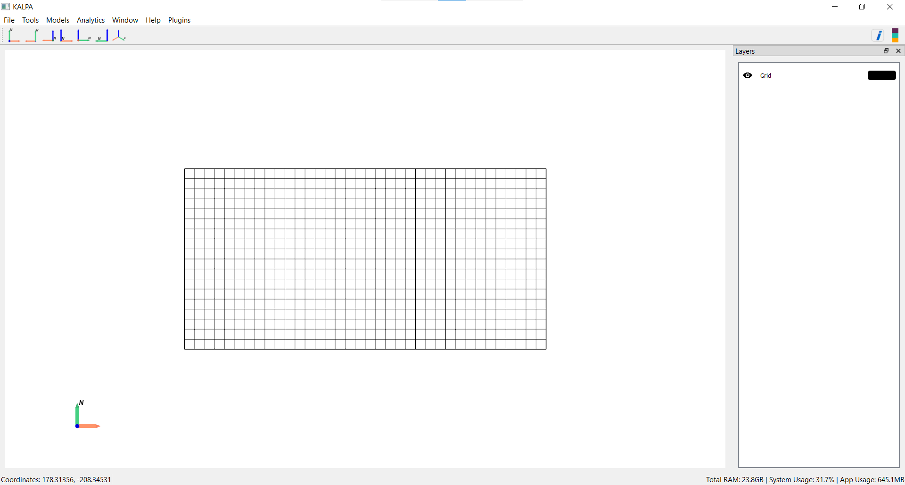
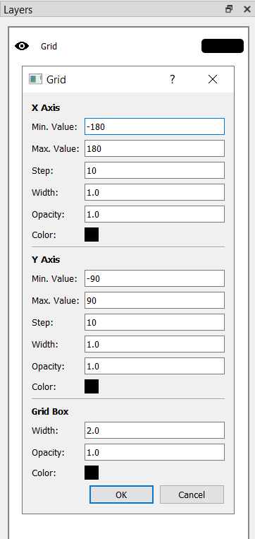

Grid Settings and View Controls#
Kalpa includes robust grid settings and visualization controls to enhance data exploration and presentation.

Grid Settings#
Default Behaviour#
When Kalpa opens, a default global grid is loaded: - Longitude: Extends from -180° to 180° in 10° increments. - Latitude: Extends from -90° to 90° in 10° increments.
Upon loading a dataset, the grid automatically adjusts to match the dataset’s spatial extent.
Customizing the Grid#
To modify grid settings:
Open the Layer Panel.
Click the colored rectangle next to the “Grid” Layer to access grid properties.

Adjustable Parameters#
You can configure the following:
Grid Extents: Minimum and maximum values for both axes.
Step Size: Interval between grid lines.
Grid Line Appearance: Set the line width, opacity, and color for both the x-axis and y-axis.
Grid Box Appearance: Adjust the color, width, and opacity of the grid bounding box.
Toggling the Grid#
To hide the grid, click the eye icon next to the “Grid” Layer in the Layer Panel.
Controlling the View#
Kalpa allows intuitive control of the view using the mouse or touchpad. Below are the controls for zooming, rotating, and repositioning on both Windows and macOS:
Zooming#
Windows: Scroll the mouse wheel up or down to zoom in and out.
macOS: Use a two-finger swipe on the touchpad to zoom in or out.
Rotating#
Windows: - Left Mouse Button (LMB): Click and drag to rotate the view. - Hold Shift + LMB to rotate along specific axes.
macOS: - Single Finger Drag: Use one finger on the touchpad to rotate. - Hold Shift + Drag to constrain rotation to specific axes.
Repositioning#
Windows: - Right Mouse Button (RMB): Click and drag to reposition the view. - Hold Shift + RMB for finer adjustments.
macOS: - Two-Finger Drag: Use two fingers on the touchpad to reposition. - Hold Shift + Two-Finger Drag for precise movements.
Resetting the View#
Press R to reset the view to its default orientation and zoom level.
Saving Figures#
Kalpa allows you to export visualized data in several formats for publication or presentation purposes.
Supported Formats#
Vector Graphics:
.svg,.eps,.ps,.pdf,.texRaster Graphics:
.png,.jpeg,.jpg
Saving Procedure#
Navigate to File > Save Figure.
Enter a filename and select the desired file extension.
Click Save to export the figure.
This chapter equips you with the tools to configure grid settings and effectively navigate your data in Kalpa. Whether you’re exploring datasets interactively or exporting high-quality visuals, Kalpa’s intuitive interface simplifies the process.